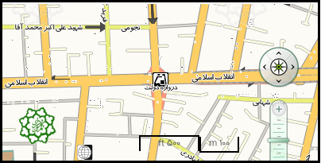

نام ايستگاه: دروازه دولت
کد ايستگاه: K1J4
آدرس: خیابان انقلاب تقاطع سعدی و مفتح
مساحت سرپوشیده: 5939 متر مربع
مساحت فضای باز: 0متر مربع
ورودي هاي ايستگاه: 1- ورودی جنوبی(خیابان انقلاب تقاطع سعدی) 2- ورودی شمال شرقی(ضلع شمال شرقی خیابان انقلاب تقاطع مفتح) 3- ورودی شمال غربی(ضلع شمال غربی خیابان انقلاب تقاطع مفتح)